Flow_Cytometry_part_I
Flow Cytometry part I
Source: Flow_Cytometry_part_I.ppt
This document contains 70 slides. Each slide is preserved as an image, followed by searchable text extracted from the presentation.
Slide 1 — ACHILLE ANSELMO PhD
Extracted slide text
ACHILLE ANSELMO PhD FLOW CYTOMETRY CORE
Slide 2 — Untitled slide
Slide 3 — CYTOMETRY vs FLOW CYTOMETRY
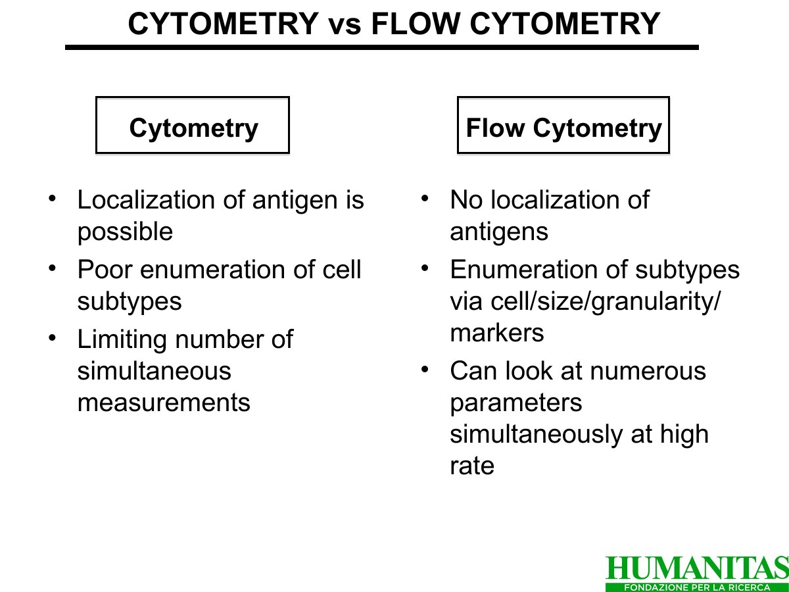
Extracted slide text
CYTOMETRY vs FLOW CYTOMETRY
Cytometry Flow Cytometry
• Localization of antigen is • No localization of
possible antigens
• Poor enumeration of cell • Enumeration of subtypes
subtypes via cell/size/granularity/
• Limiting number of markers
simultaneous • Can look at numerous
measurements parameters
simultaneously at high
rate
Slide 4 — FLOW CYTOMETRY APPLICATIONS
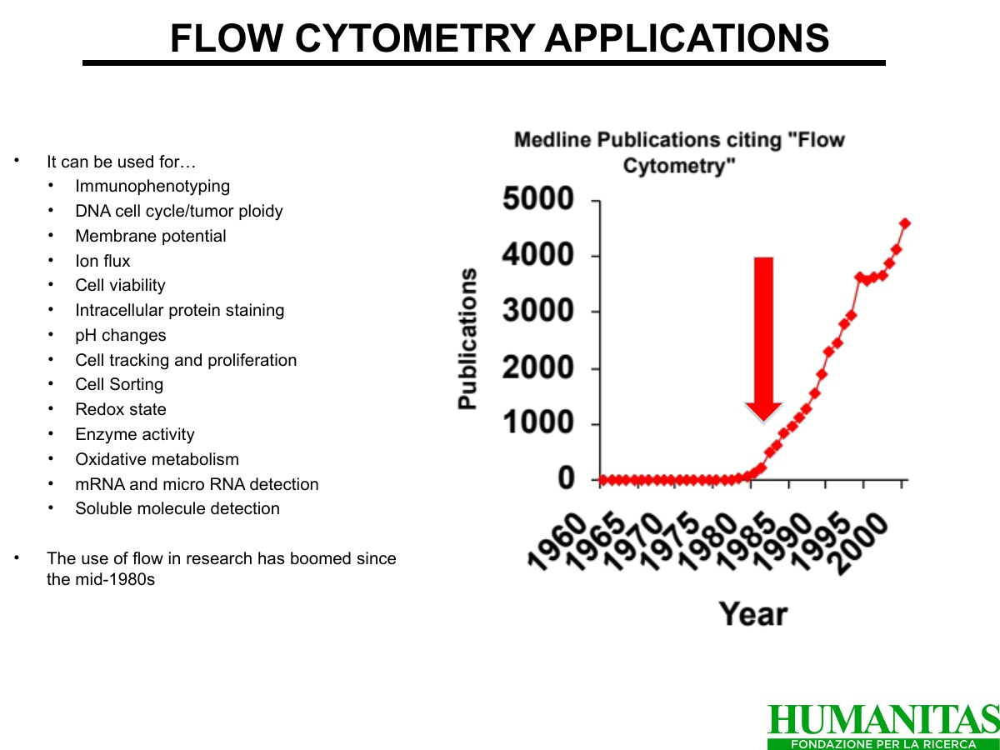
Extracted slide text
FLOW CYTOMETRY APPLICATIONS
• It can be used for…
• Immunophenotyping
• DNA cell cycle/tumor ploidy
• Membrane potential
• Ion flux
• Cell viability
• Intracellular protein staining
• pH changes
• Cell tracking and proliferation
• Cell Sorting
• Redox state
• Enzyme activity
• Oxidative metabolism
• mRNA and micro RNA detection
• Soluble molecule detection
• The use of flow in research has boomed since
the mid-1980s
Slide 5 — FLOW CYTOMETER MAIN PARTS
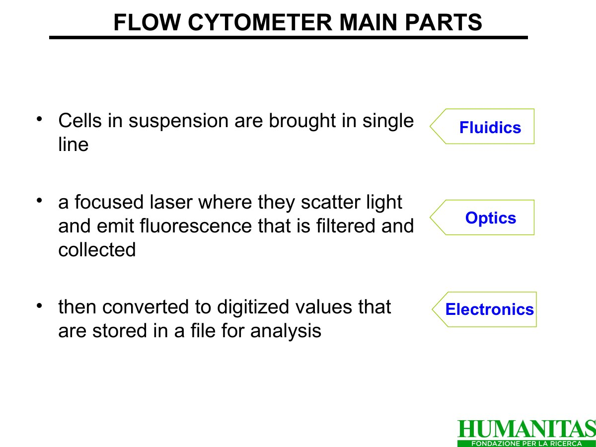
Extracted slide text
FLOW CYTOMETER MAIN PARTS
• Cells in suspension are brought in single Fluidics
line
• a focused laser where they scatter light
Optics
and emit fluorescence that is filtered and
collected
• then converted to digitized values that Electronics
are stored in a file for analysis
Slide 6 — DIGITAL INSTRUMENTS FOR FLOW CYTOMETRY
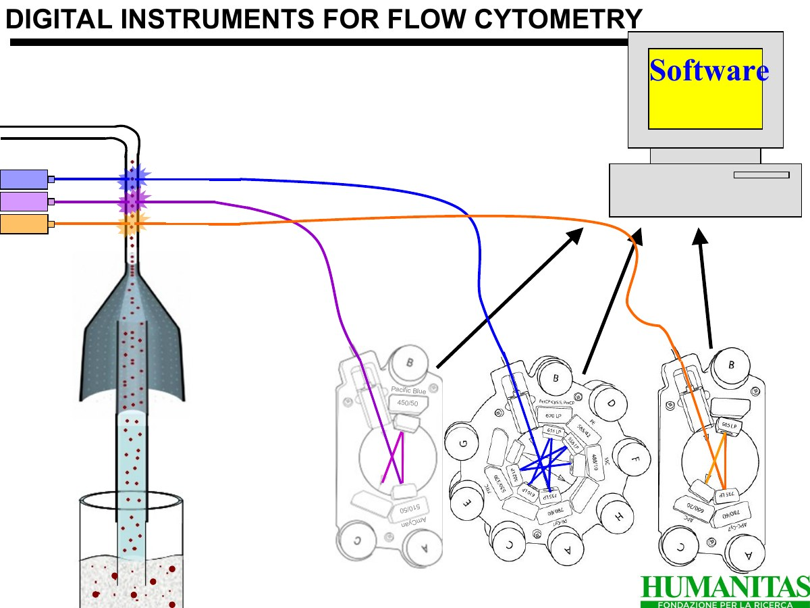
Extracted slide text
DIGITAL INSTRUMENTS FOR FLOW CYTOMETRY
Software
Pacific Blue
450/50
510/
50
AmC
an y
Slide 7 — FLUIDIC PART
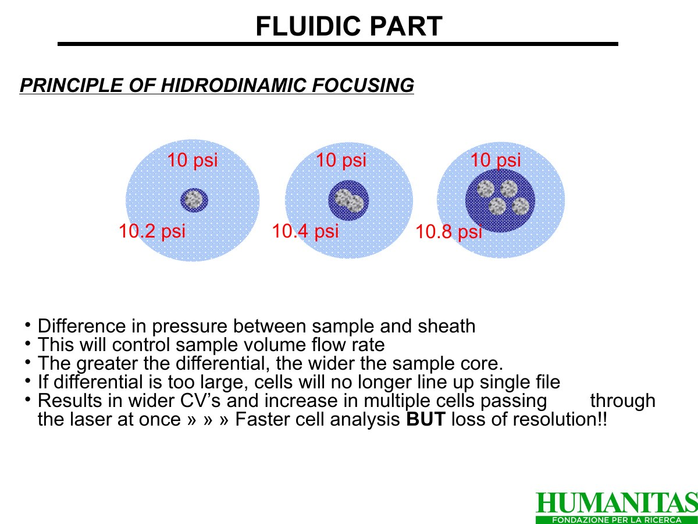
Extracted slide text
FLUIDIC PART
PRINCIPLE OF HIDRODINAMIC FOCUSING
10 psi 10 psi 10 psi
10.2 psi 10.4 psi 10.8 psi
• Difference in pressure between sample and sheath
• This will control sample volume flow rate
• The greater the differential, the wider the sample core.
• If differential is too large, cells will no longer line up single file
• Results in wider CV’s and increase in multiple cells passing through
the laser at once » » » Faster cell analysis BUT loss of resolution!!
Slide 8 — FLUIDIC PART
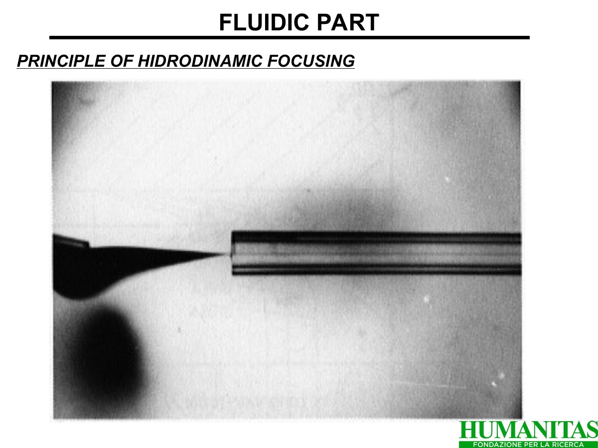
Extracted slide text
FLUIDIC PART PRINCIPLE OF HIDRODINAMIC FOCUSING
Slide 9 — OPTICAL PART
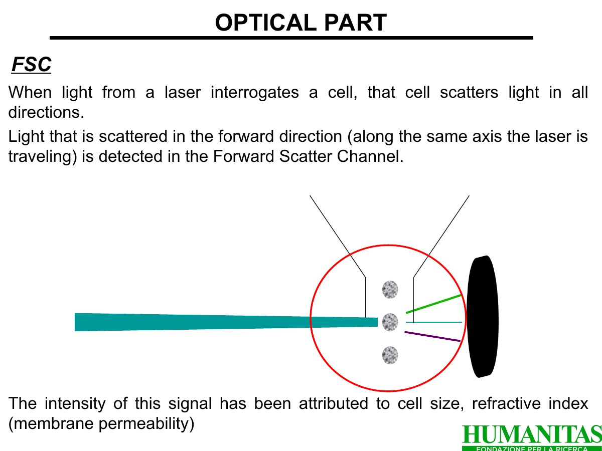
Extracted slide text
OPTICAL PART FSC When light from a laser interrogates a cell, that cell scatters light in all directions. Light that is scattered in the forward direction (along the same axis the laser is traveling) is detected in the Forward Scatter Channel. The intensity of this signal has been attributed to cell size, refractive index (membrane permeability)
Slide 10 — OPTICAL PART
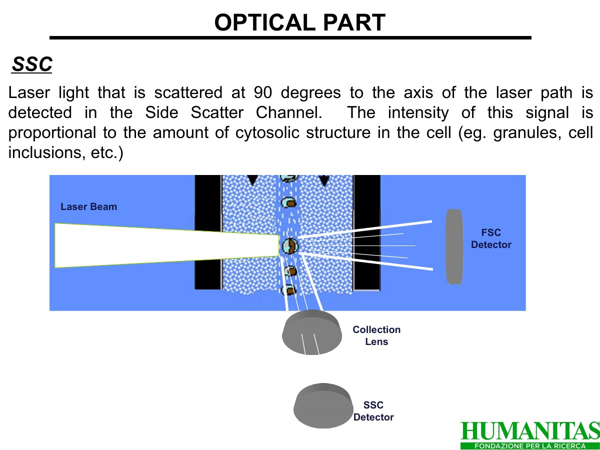
Extracted slide text
OPTICAL PART
SSC
Laser light that is scattered at 90 degrees to the axis of the laser path is
detected in the Side Scatter Channel. The intensity of this signal is
proportional to the amount of cytosolic structure in the cell (eg. granules, cell
inclusions, etc.)
Laser Beam
FSC
Detector
Collection
Lens
SSC
Detector
Slide 11 — OPTICAL PART
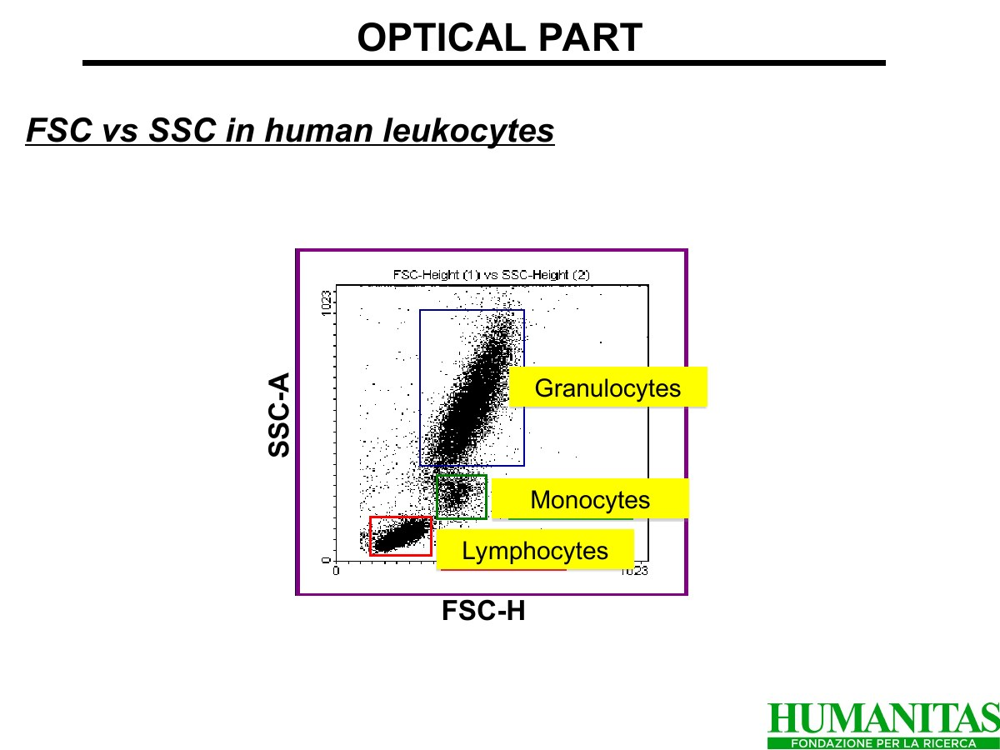
Extracted slide text
OPTICAL PART
FSC vs SSC in human leukocytes
SSC-A
Granulocytes
Monocytes
Lymphocytes
FSC-H
Slide 12 — OPTICAL PART
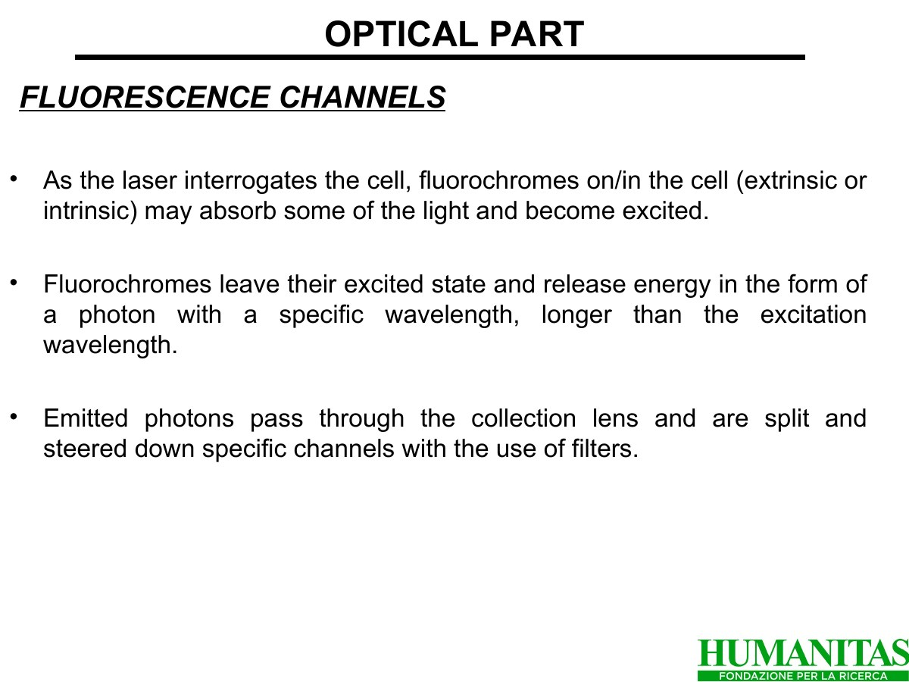
Extracted slide text
OPTICAL PART FLUORESCENCE CHANNELS • As the laser interrogates the cell, fluorochromes on/in the cell (extrinsic or intrinsic) may absorb some of the light and become excited. • Fluorochromes leave their excited state and release energy in the form of a photon with a specific wavelength, longer than the excitation wavelength. • Emitted photons pass through the collection lens and are split and steered down specific channels with the use of filters.
Slide 13 — OPTICAL PART
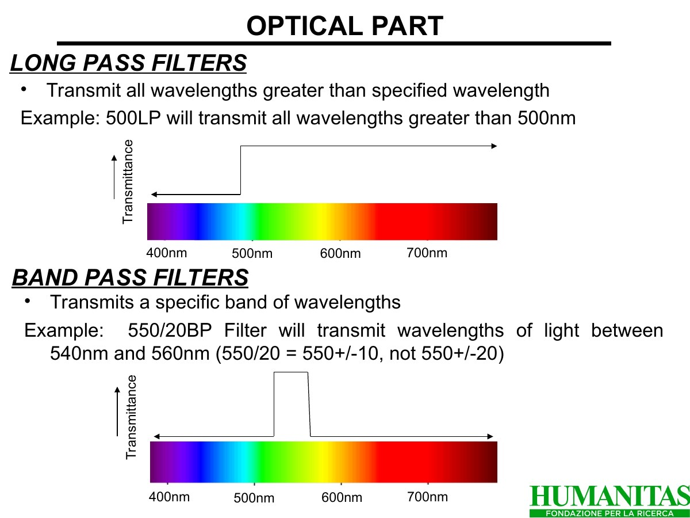
Extracted slide text
OPTICAL PART
LONG PASS FILTERS
• Transmit all wavelengths greater than specified wavelength
Example: 500LP will transmit all wavelengths greater than 500nm
Transmittance
400nm 500nm 600nm 700nm
BAND PASS FILTERS
• Transmits a specific band of wavelengths
Example: 550/20BP Filter will transmit wavelengths of light between
540nm and 560nm (550/20 = 550+/-10, not 550+/-20)
Transmittance
400nm 500nm 600nm 700nm
Slide 14 — DIGITAL INSTRUMENTS FOR FLOW CYTOMETRY
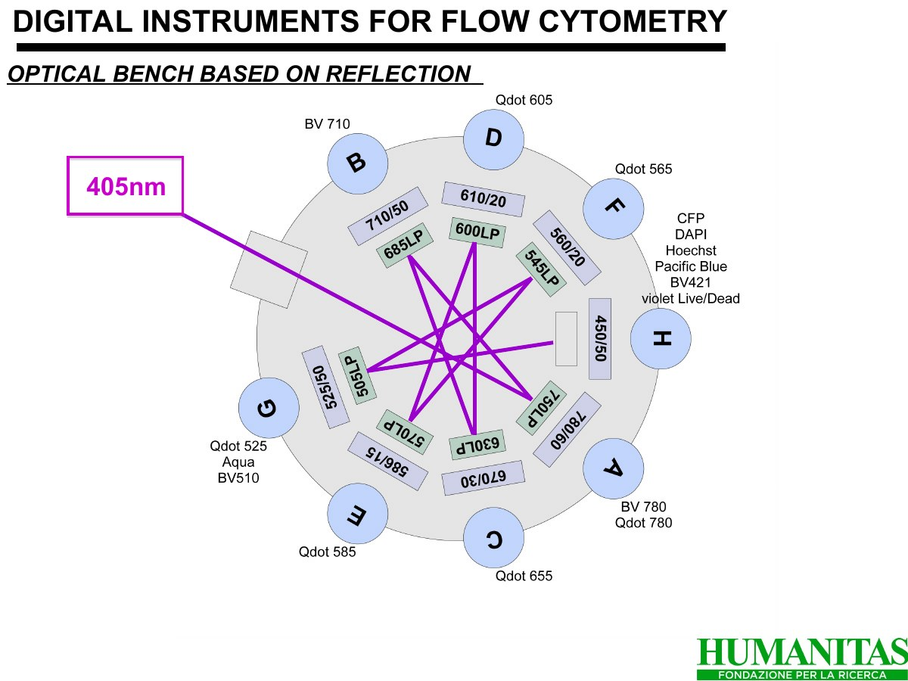
Extracted slide text
DIGITAL INSTRUMENTS FOR FLOW CYTOMETRY
OPTICAL BENCH BASED ON REFLECTION
405nm
Slide 15 — ANALOGICAL INSTRUMENTS FOR FLOW CYTOMETRY
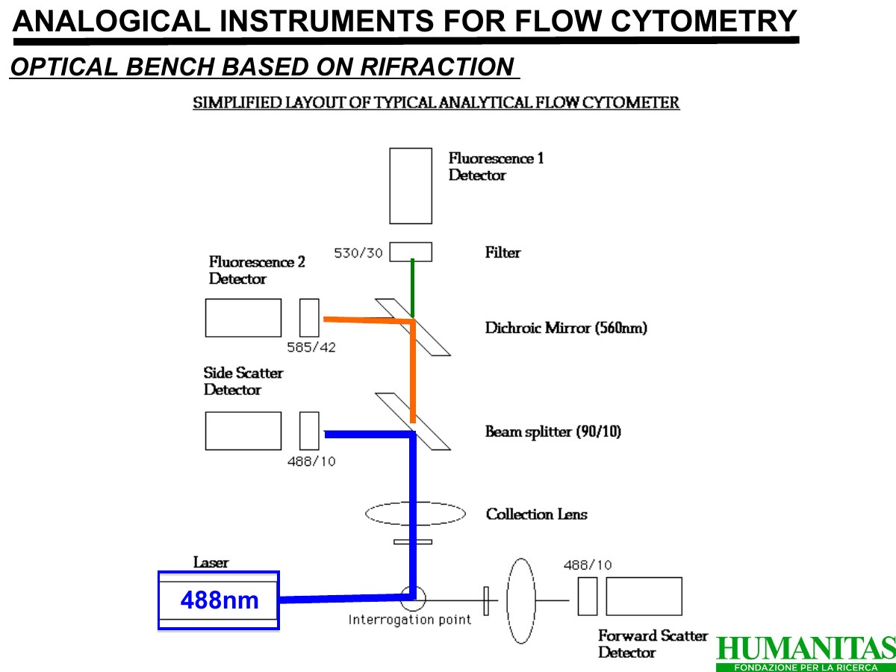
Extracted slide text
ANALOGICAL INSTRUMENTS FOR FLOW CYTOMETRY
OPTICAL BENCH BASED ON RIFRACTION
488nm
Slide 16 — OPTICAL PART
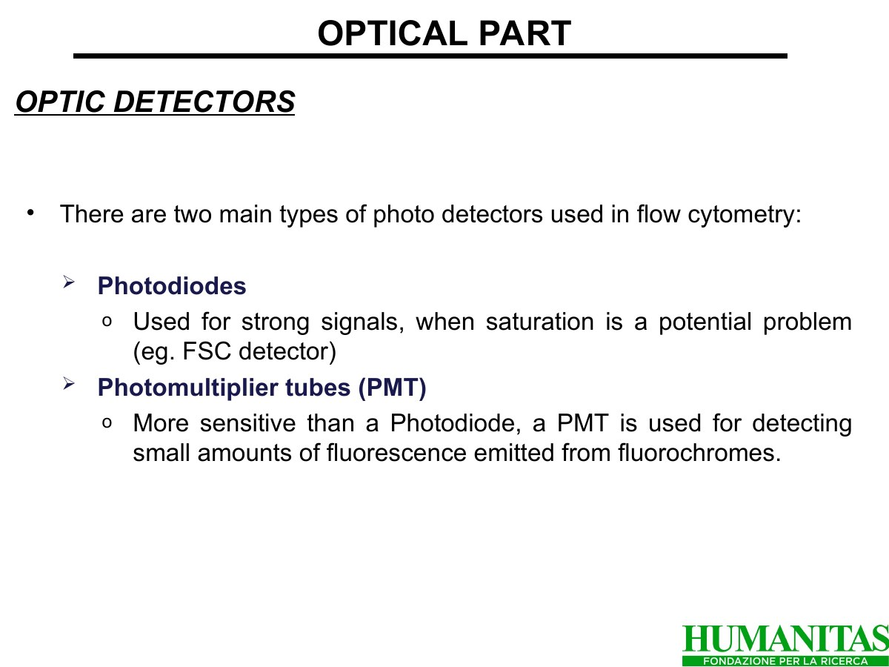
Extracted slide text
OPTICAL PART
OPTIC DETECTORS
• There are two main types of photo detectors used in flow cytometry:
Photodiodes
o Used for strong signals, when saturation is a potential problem
(eg. FSC detector)
Photomultiplier tubes (PMT)
o More sensitive than a Photodiode, a PMT is used for detecting
small amounts of fluorescence emitted from fluorochromes.
Slide 17 — ELECTRONIC PART
Extracted slide text
ELECTRONIC PART STEPS FROM OPTIC TO ELECTRONIC CONVERSION OF THE SIGNAL 1 Photon recovery from a single event in a time window 2 Conversion into current 3 Current transfer through an amplifier 4 Conversion into a voltage pulse 5 Conversion into a digitized value 6 Software visualization
Slide 18 — ELECTRONIC PART
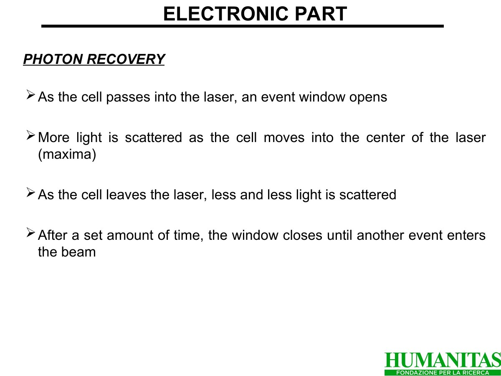
Extracted slide text
ELECTRONIC PART PHOTON RECOVERY As the cell passes into the laser, an event window opens More light is scattered as the cell moves into the center of the laser (maxima) As the cell leaves the laser, less and less light is scattered After a set amount of time, the window closes until another event enters the beam
Slide 19 — ELECTRONIC PART
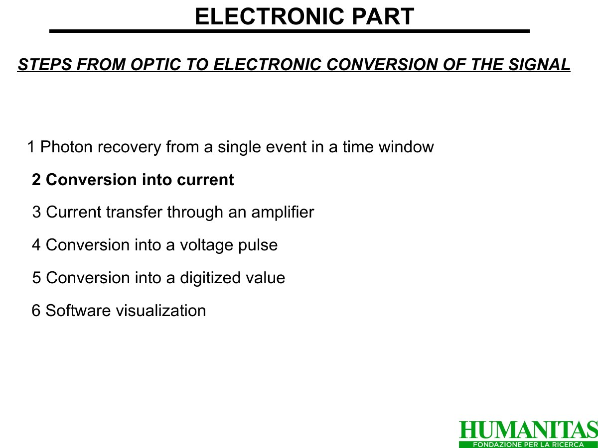
Extracted slide text
ELECTRONIC PART STEPS FROM OPTIC TO ELECTRONIC CONVERSION OF THE SIGNAL 1 Photon recovery from a single event in a time window 2 Conversion into current 3 Current transfer through an amplifier 4 Conversion into a voltage pulse 5 Conversion into a digitized value 6 Software visualization
Slide 20 — ELECTRONIC PART
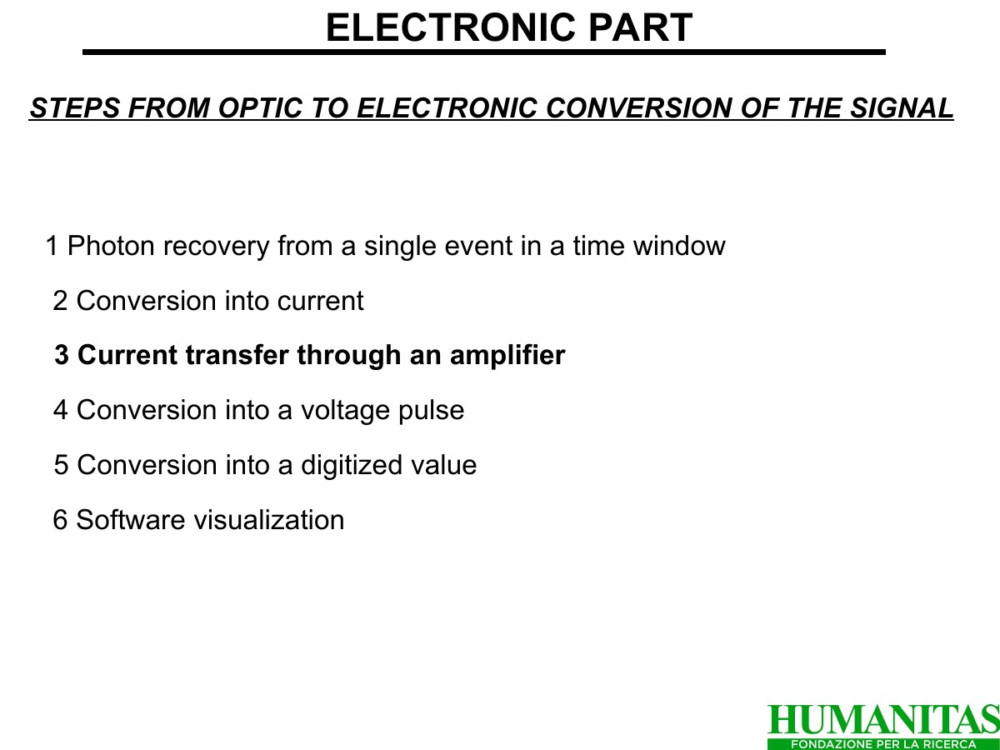
Extracted slide text
ELECTRONIC PART STEPS FROM OPTIC TO ELECTRONIC CONVERSION OF THE SIGNAL 1 Photon recovery from a single event in a time window 2 Conversion into current 3 Current transfer through an amplifier 4 Conversion into a voltage pulse 5 Conversion into a digitized value 6 Software visualization
Slide 21 — ELECTRONIC PART
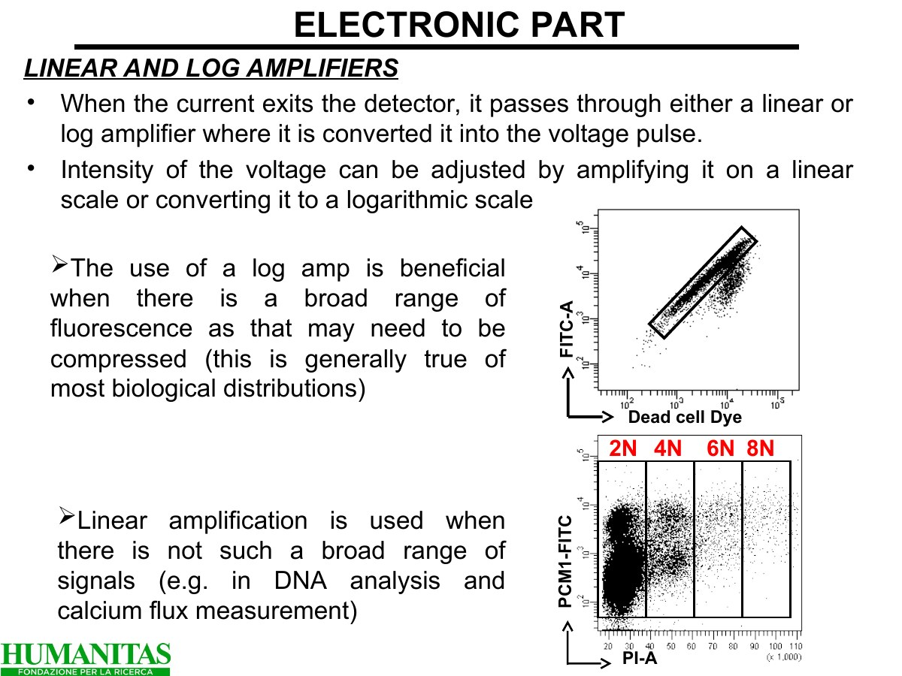
Extracted slide text
ELECTRONIC PART
LINEAR AND LOG AMPLIFIERS
• When the current exits the detector, it passes through either a linear or
log amplifier where it is converted it into the voltage pulse.
• Intensity of the voltage can be adjusted by amplifying it on a linear
scale or converting it to a logarithmic scale
The use of a log amp is beneficial
when there is a broad range of
FITC-A
fluorescence as that may need to be
compressed (this is generally true of
most biological distributions)
Dead cell Dye
2N 4N 6N 8N
Linear amplification is used when
PCM1-FITC
there is not such a broad range of
signals (e.g. in DNA analysis and
calcium flux measurement)
PI-A
Slide 22 — ELECTRONIC PART
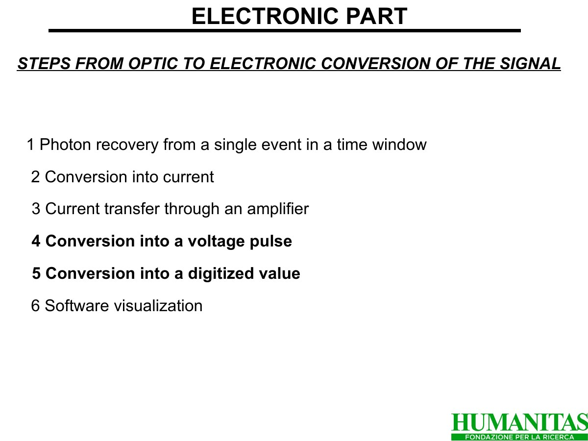
Extracted slide text
ELECTRONIC PART STEPS FROM OPTIC TO ELECTRONIC CONVERSION OF THE SIGNAL 1 Photon recovery from a single event in a time window 2 Conversion into current 3 Current transfer through an amplifier 4 Conversion into a voltage pulse 5 Conversion into a digitized value 6 Software visualization
Slide 23 — ELECTRONIC PART
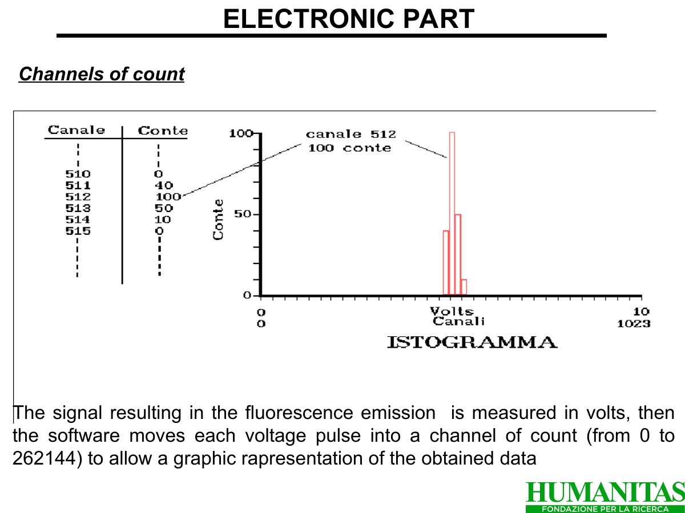
Extracted slide text
ELECTRONIC PART Channels of count The signal resulting in the fluorescence emission is measured in volts, then the software moves each voltage pulse into a channel of count (from 0 to 262144) to allow a graphic rapresentation of the obtained data
Slide 24 — ELECTRONIC PART
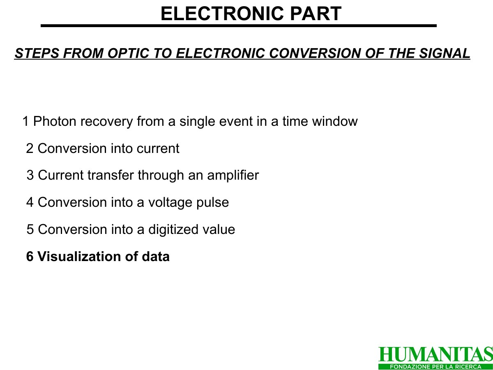
Extracted slide text
ELECTRONIC PART STEPS FROM OPTIC TO ELECTRONIC CONVERSION OF THE SIGNAL 1 Photon recovery from a single event in a time window 2 Conversion into current 3 Current transfer through an amplifier 4 Conversion into a voltage pulse 5 Conversion into a digitized value 6 Visualization of data
Slide 25 — ELECTRONIC PART
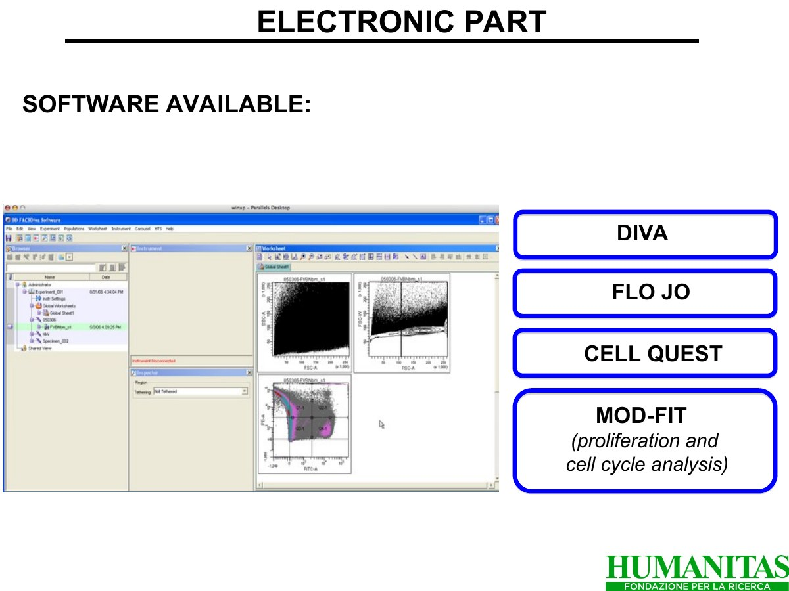
Extracted slide text
ELECTRONIC PART
SOFTWARE AVAILABLE:
DIVA
FLO JO
CELL QUEST
MOD-FIT
(proliferation and
cell cycle analysis)
Slide 26 — FLOW CYTOMETRY UNIT EQUIPMENT
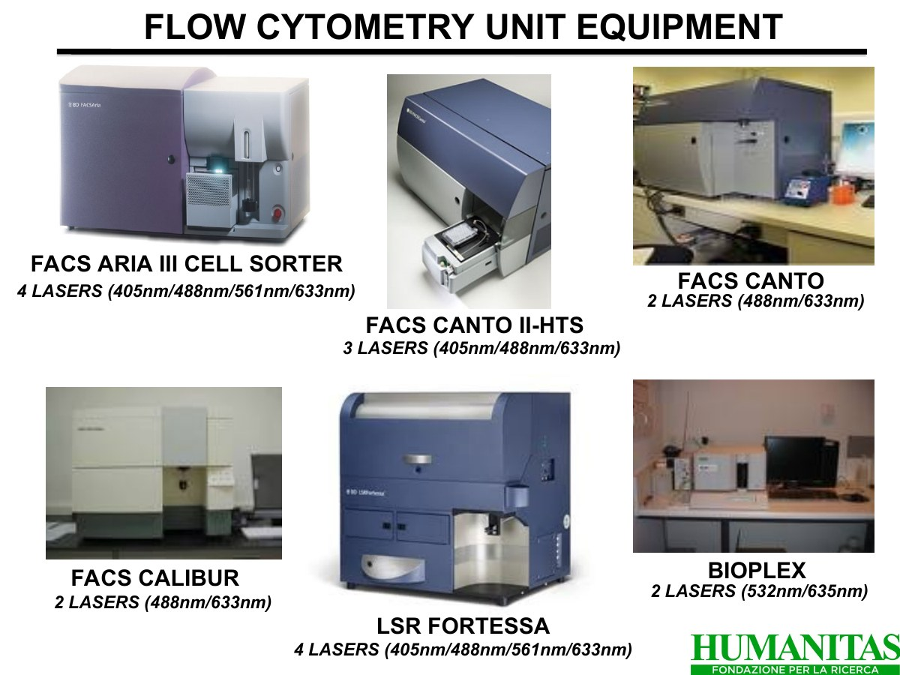
Extracted slide text
FLOW CYTOMETRY UNIT EQUIPMENT
FACS ARIA III CELL SORTER
4 LASERS (405nm/488nm/561nm/633nm) FACS CANTO
2 LASERS (488nm/633nm)
FACS CANTO II-HTS
3 LASERS (405nm/488nm/633nm)
FACS CALIBUR BIOPLEX
2 LASERS (532nm/635nm)
2 LASERS (488nm/633nm)
LSR FORTESSA
4 LASERS (405nm/488nm/561nm/633nm)
Slide 27 — Untitled slide
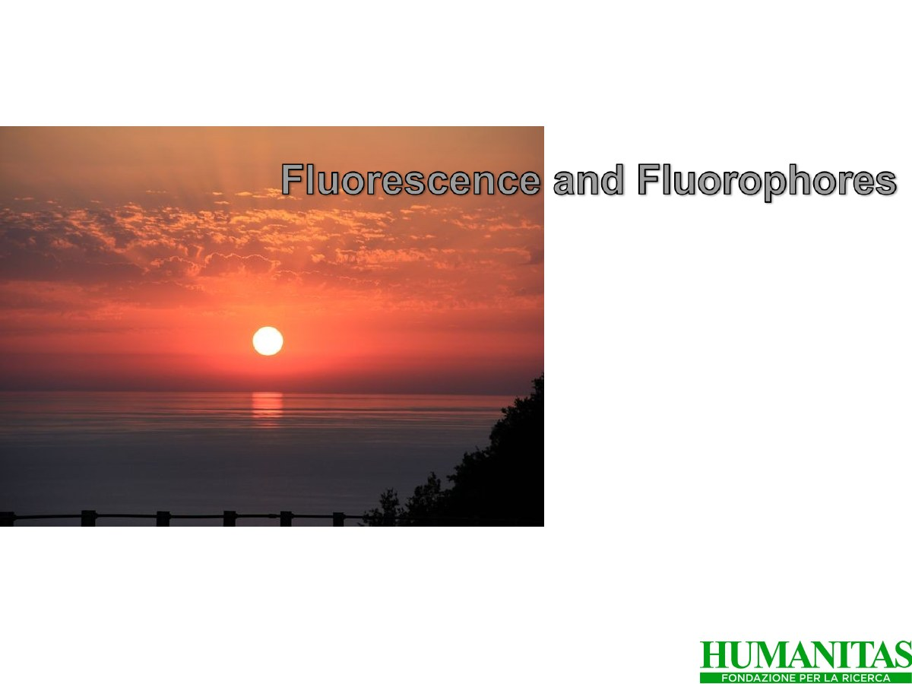
Slide 28 — Fluorescence
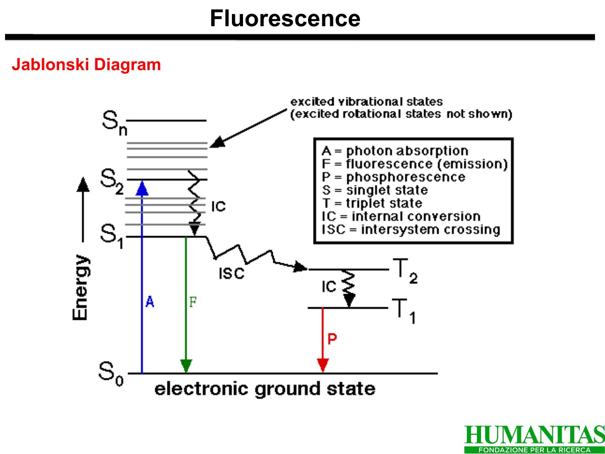
Extracted slide text
Fluorescence Jablonski Diagram
Slide 29 — Fluorophores
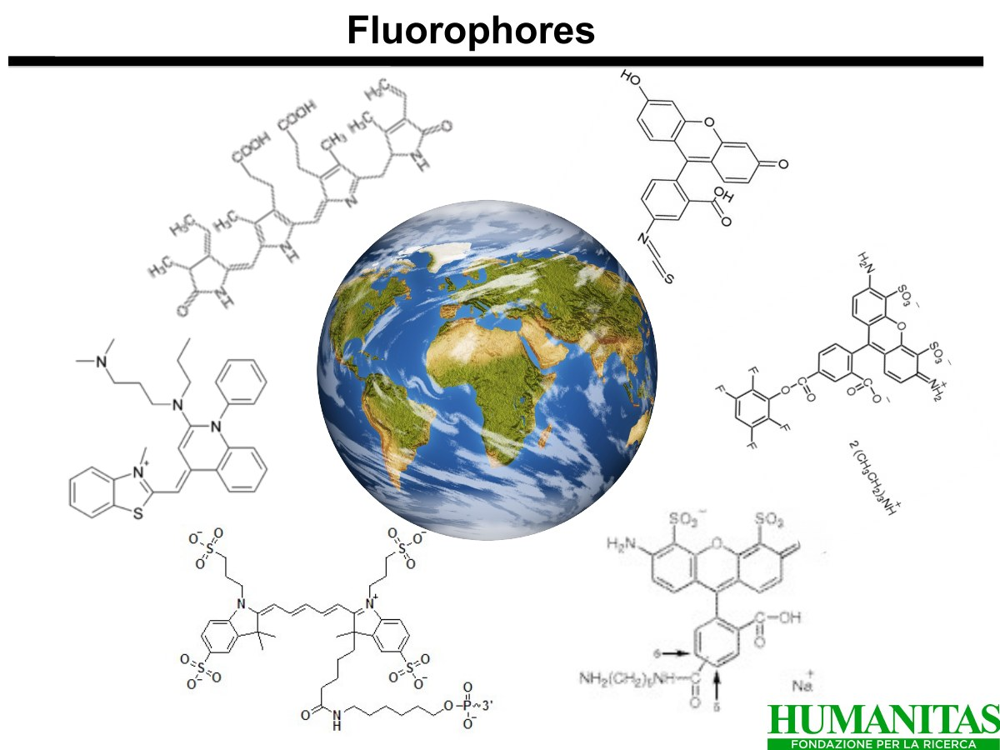
Extracted slide text
Fluorophores
Slide 30 — FLUOROPHORES CLASSIFICATION
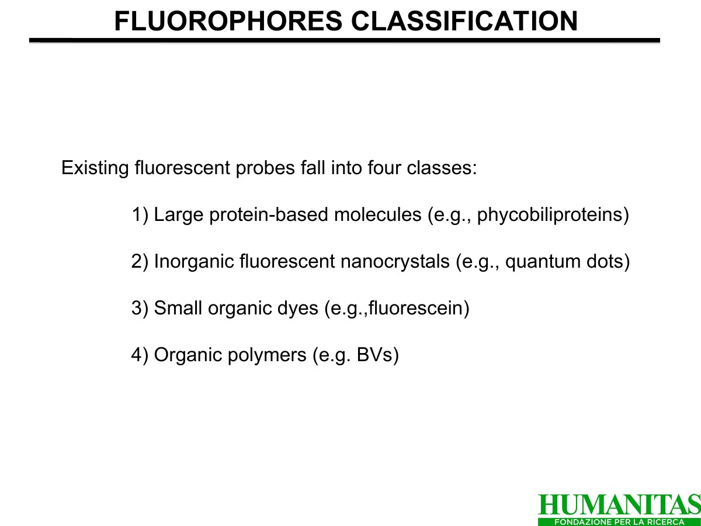
Extracted slide text
FLUOROPHORES CLASSIFICATION
Existing fluorescent probes fall into four classes:
1) Large protein-based molecules (e.g., phycobiliproteins)
2) Inorganic fluorescent nanocrystals (e.g., quantum dots)
3) Small organic dyes (e.g.,fluorescein)
4) Organic polymers (e.g. BVs)
Slide 31 — FLUOROPHORES CLASSIFICATION
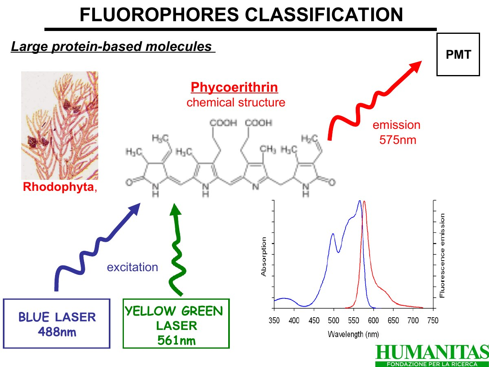
Extracted slide text
FLUOROPHORES CLASSIFICATION
Large protein-based molecules
PMT
Phycoerithrin
chemical structure
emission
575nm
Rhodophyta,
excitation
YELLOW GREEN
BLUE LASER
LASER
488nm
561nm
Slide 32 — FLUOROPHORES CLASSIFICATION
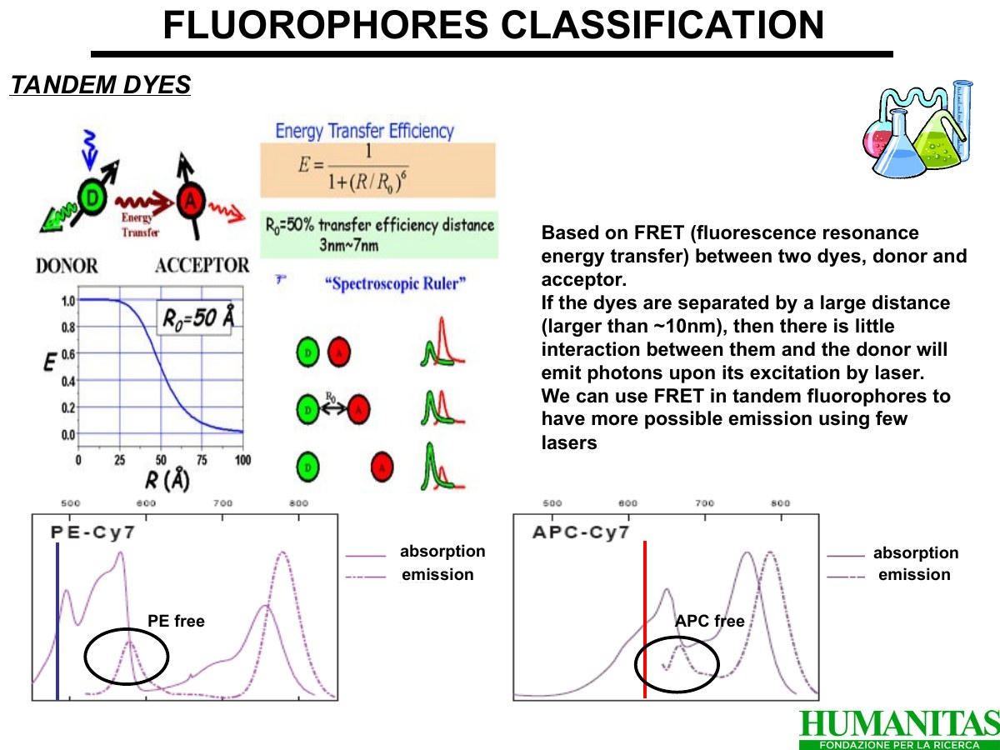
Extracted slide text
FLUOROPHORES CLASSIFICATION
TANDEM DYES
Based on FRET (fluorescence resonance
energy transfer) between two dyes, donor and
acceptor.
If the dyes are separated by a large distance
(larger than ~10nm), then there is little
interaction between them and the donor will
emit photons upon its excitation by laser.
We can use FRET in tandem fluorophores to
have more possible emission using few
lasers
absorption absorption
emission emission
PE free APC free
Slide 33 — FLUOROPHORES CLASSIFICATION
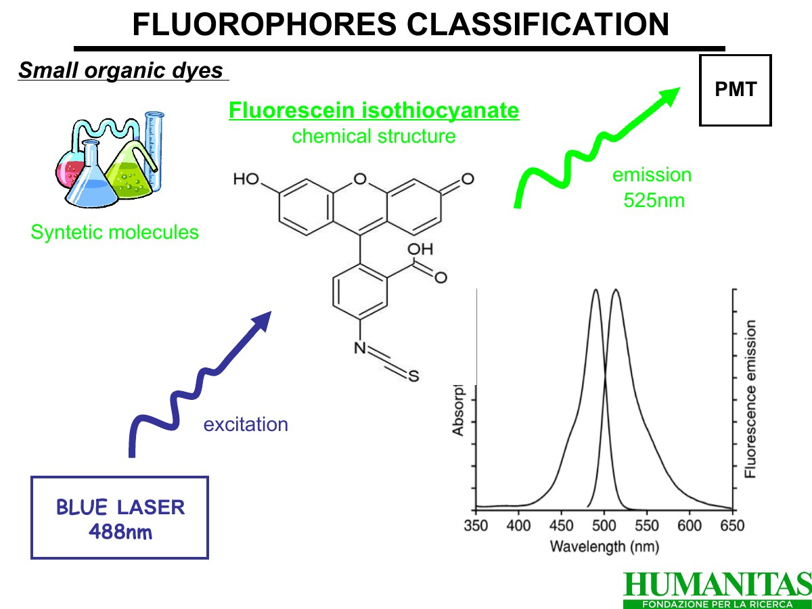
Extracted slide text
FLUOROPHORES CLASSIFICATION
Small organic dyes
PMT
Fluorescein isothiocyanate
chemical structure
emission
525nm
Syntetic molecules
excitation
BLUE LASER
488nm
Slide 34 — FLUOROPHORES CLASSIFICATION
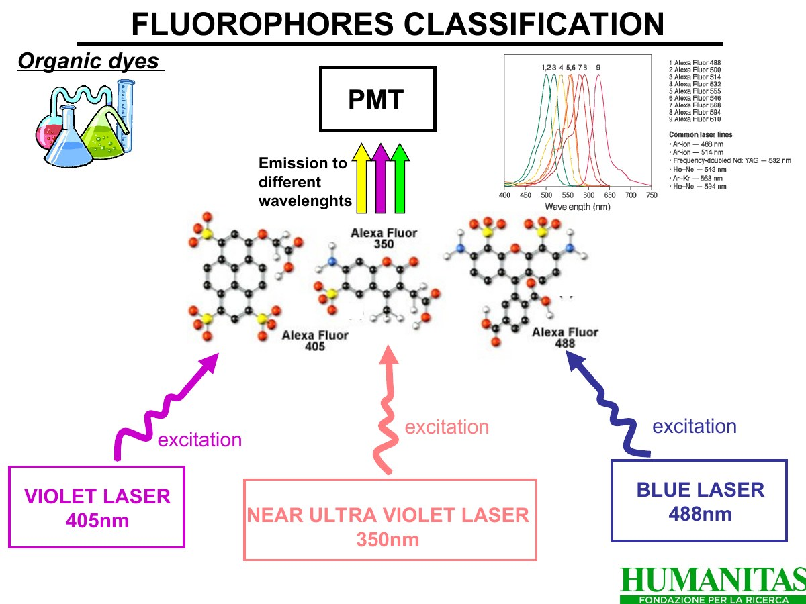
Extracted slide text
FLUOROPHORES CLASSIFICATION
Organic dyes
PMT
Emission to
different
wavelenghts
excitation excitation
excitation
VIOLET LASER BLUE LASER
405nm NEAR ULTRA VIOLET LASER 488nm
350nm
Slide 35 — FLUOROPHORES CLASSIFICATION
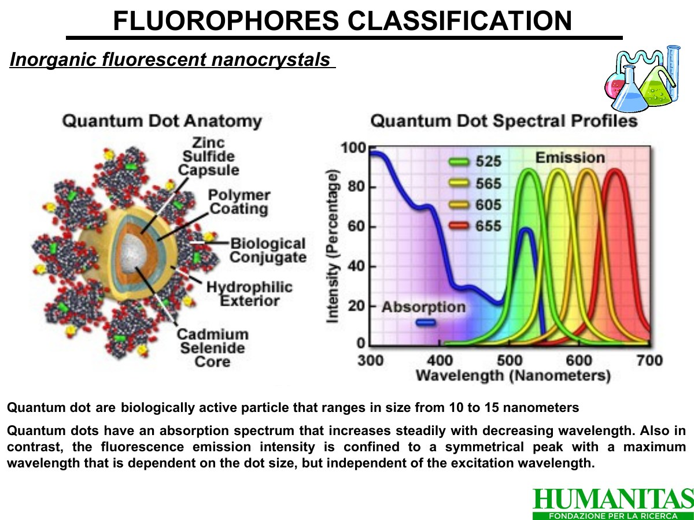
Extracted slide text
FLUOROPHORES CLASSIFICATION Inorganic fluorescent nanocrystals Quantum dot are biologically active particle that ranges in size from 10 to 15 nanometers Quantum dots have an absorption spectrum that increases steadily with decreasing wavelength. Also in contrast, the fluorescence emission intensity is confined to a symmetrical peak with a maximum wavelength that is dependent on the dot size, but independent of the excitation wavelength.
Slide 36 — FLUOROPHORES CLASSIFICATION
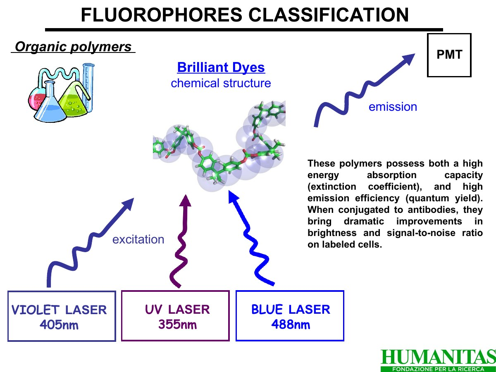
Extracted slide text
FLUOROPHORES CLASSIFICATION
Organic polymers
PMT
Brilliant Dyes
chemical structure
emission
These polymers possess both a high
energy absorption capacity
(extinction coefficient), and high
emission efficiency (quantum yield).
When conjugated to antibodies, they
bring dramatic improvements in
brightness and signal-to-noise ratio
excitation on labeled cells.
VIOLET LASER UV LASER BLUE LASER
405nm 355nm 488nm
Slide 37 — BRILLIANT DYES STRUCTURE AND FEATURES
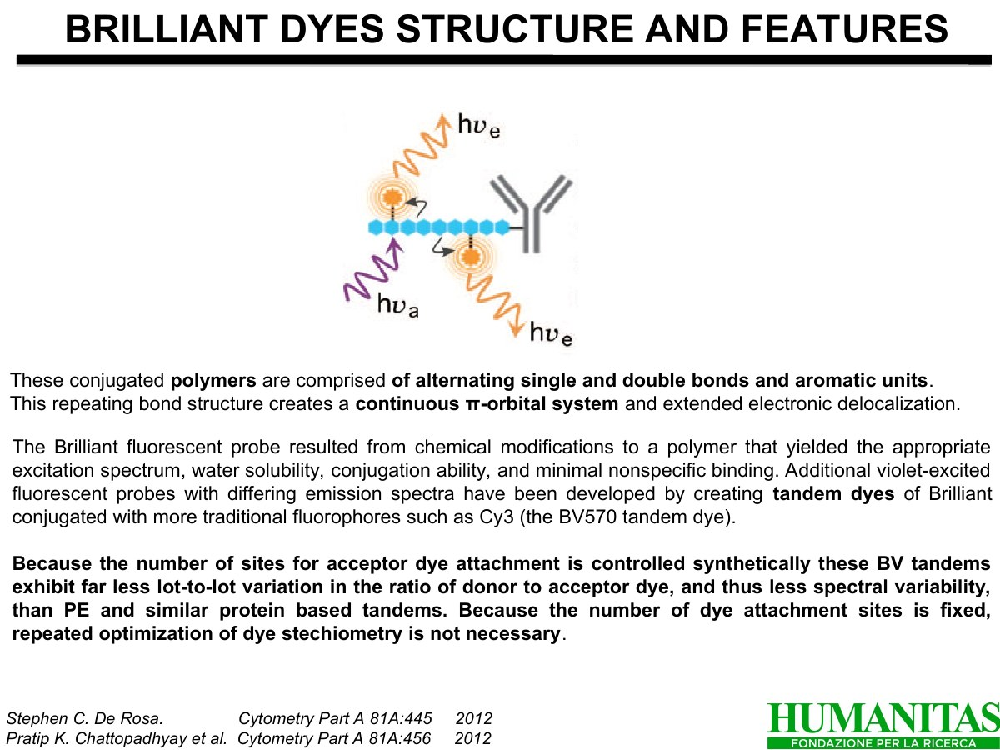
Extracted slide text
BRILLIANT DYES STRUCTURE AND FEATURES These conjugated polymers are comprised of alternating single and double bonds and aromatic units. This repeating bond structure creates a continuous π-orbital system and extended electronic delocalization. The Brilliant fluorescent probe resulted from chemical modifications to a polymer that yielded the appropriate excitation spectrum, water solubility, conjugation ability, and minimal nonspecific binding. Additional violet-excited fluorescent probes with differing emission spectra have been developed by creating tandem dyes of Brilliant conjugated with more traditional fluorophores such as Cy3 (the BV570 tandem dye). Because the number of sites for acceptor dye attachment is controlled synthetically these BV tandems exhibit far less lot-to-lot variation in the ratio of donor to acceptor dye, and thus less spectral variability, than PE and similar protein based tandems. Because the number of dye attachment sites is fixed, repeated optimization of dye stechiometry is not necessary. Stephen C. De Rosa. Cytometry Part A 81A:445 2012 Pratip K. Chattopadhyay et al. Cytometry Part A 81A:456 2012
Slide 38 — …MORE ABOUT BRILLIANT
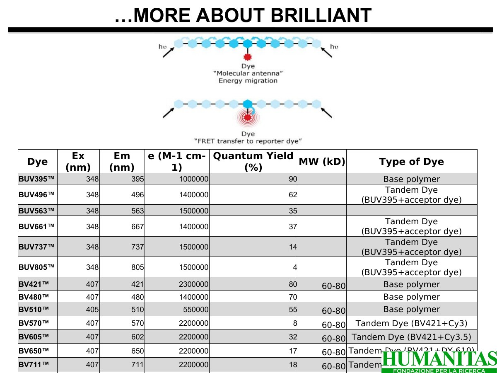
Extracted slide text
…MORE ABOUT BRILLIANT
Ex Em e (M-1 cm- Quantum Yield
Dye MW (kD) Type of Dye
(nm) (nm) 1) (%)
BUV395™ 348 395 1000000 90 Base polymer
Tandem Dye
BUV496™ 348 496 1400000 62
(BUV395+acceptor dye)
BUV563™ 348 563 1500000 35
Tandem Dye
BUV661™ 348 667 1400000 37
(BUV395+acceptor dye)
Tandem Dye
BUV737™ 348 737 1500000 14
(BUV395+acceptor dye)
Tandem Dye
BUV805™ 348 805 1500000 4
(BUV395+acceptor dye)
BV421™ 407 421 2300000 80 60-80 Base polymer
BV480™ 407 480 1400000 70 Base polymer
BV510™ 405 510 550000 55 60-80 Base polymer
BV570™ 407 570 2200000 8 60-80 Tandem Dye (BV421+Cy3)
BV605™ 407 602 2200000 32 60-80 Tandem Dye (BV421+Cy3.5)
BV650™ 407 650 2200000 17 60-80 Tandem Dye (BV421+DY-610)
BV711™ 407 711 2200000 18 60-80 Tandem Dye (BV421+DY-682)
Slide 39 — BRILLIANT VIOLET FILTERS EQUIPMENT
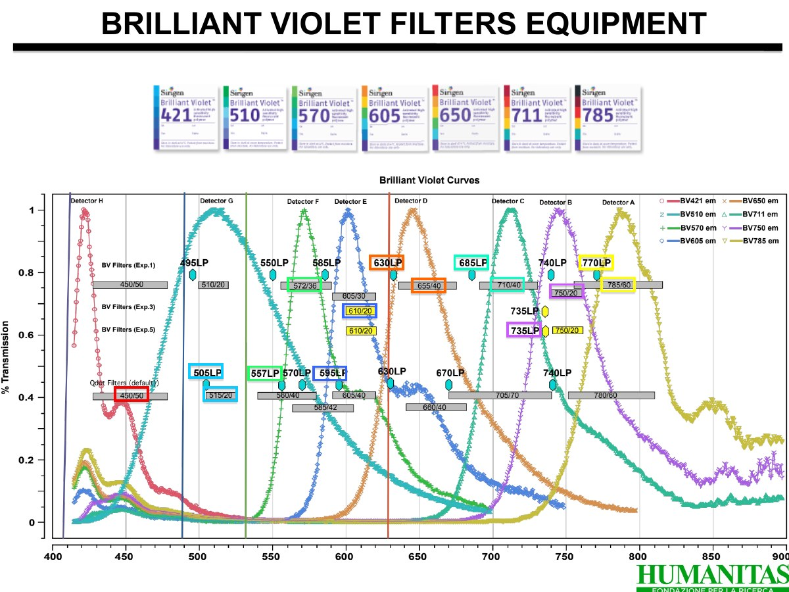
Extracted slide text
BRILLIANT VIOLET FILTERS EQUIPMENT
Slide 40 — BRILLIANT STAIN BUFFER
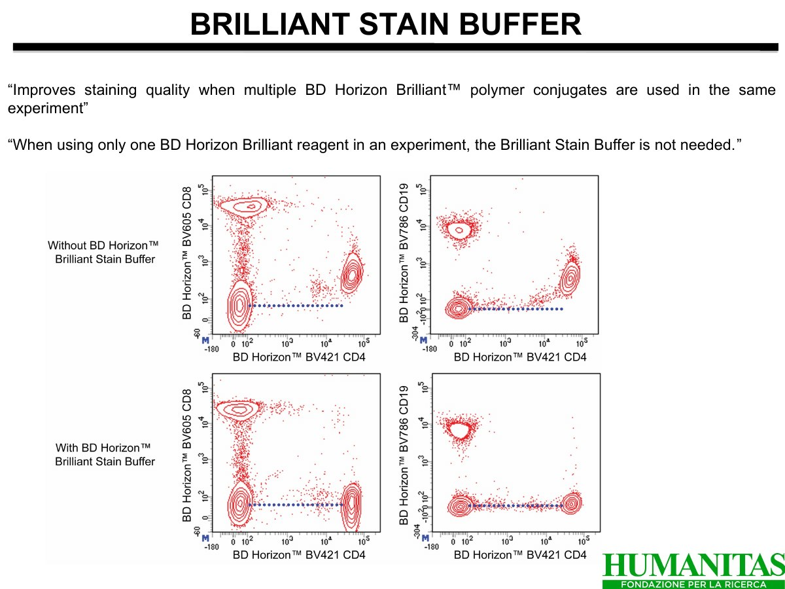
Extracted slide text
BRILLIANT STAIN BUFFER “Improves staining quality when multiple BD Horizon Brilliant™ polymer conjugates are used in the same experiment” “When using only one BD Horizon Brilliant reagent in an experiment, the Brilliant Stain Buffer is not needed.”
Slide 41 — SOME EXAMPLES OF BRILLIANT DYES STAINING
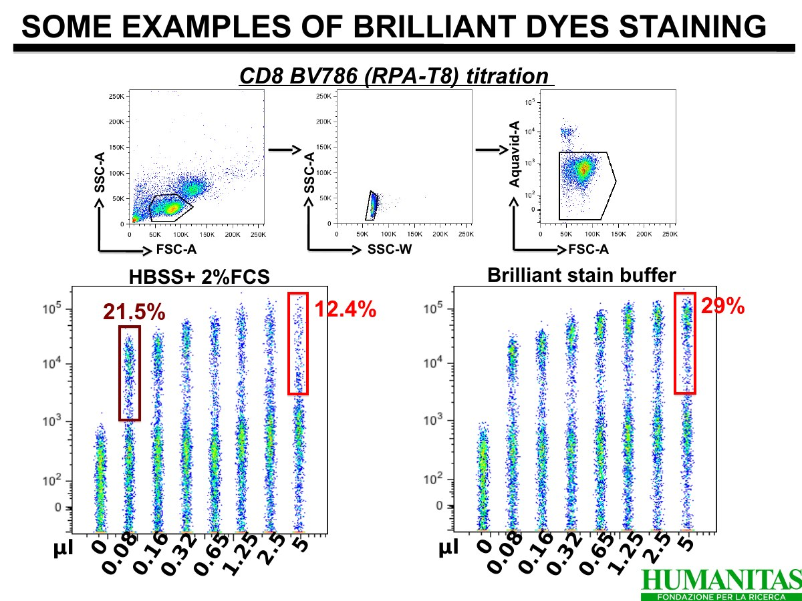
Extracted slide text
SOME EXAMPLES OF BRILLIANT DYES STAINING
CD8 BV786 (RPA-T8) titration
Aquavid-A
SSC-A
SSC-A
FSC-A SSC-W FSC-A
HBSS+ 2%FCS Brilliant stain buffer
21.5% 12.4% 29%
μl μl
08
0. 6
5
08
16
25
5
25
65
32
65
32
5
5
0
0
1
2.
2.
0.
0.
0.
0.
1.
1.
0.
0.
0.
Slide 42 — SOME EXAMPLES OF BRILLIANT DYES STAINING
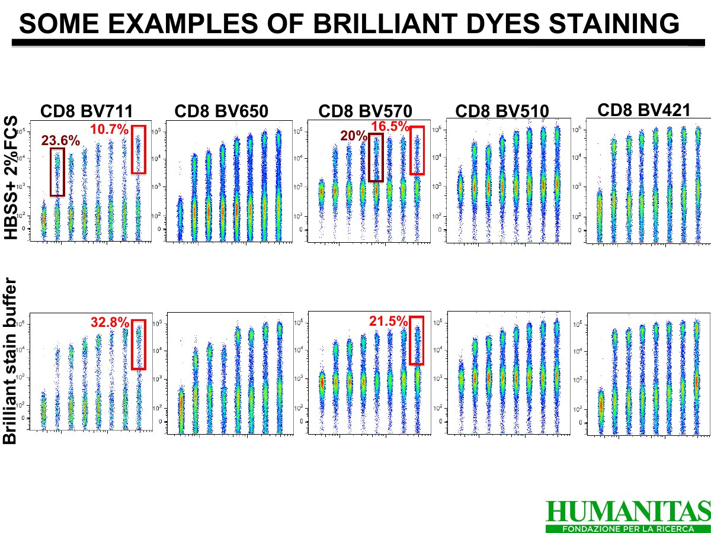
Extracted slide text
SOME EXAMPLES OF BRILLIANT DYES STAINING
CD8 BV711 CD8 BV650 CD8 BV570 CD8 BV510 CD8 BV421
HBSS+ 2%FCS
10.7% 16.5%
23.6% 20%
Brilliant stain buffer
32.8% 21.5%
Slide 43 — … AND BRILLIANT BLUE CONJUGATES TITRATION
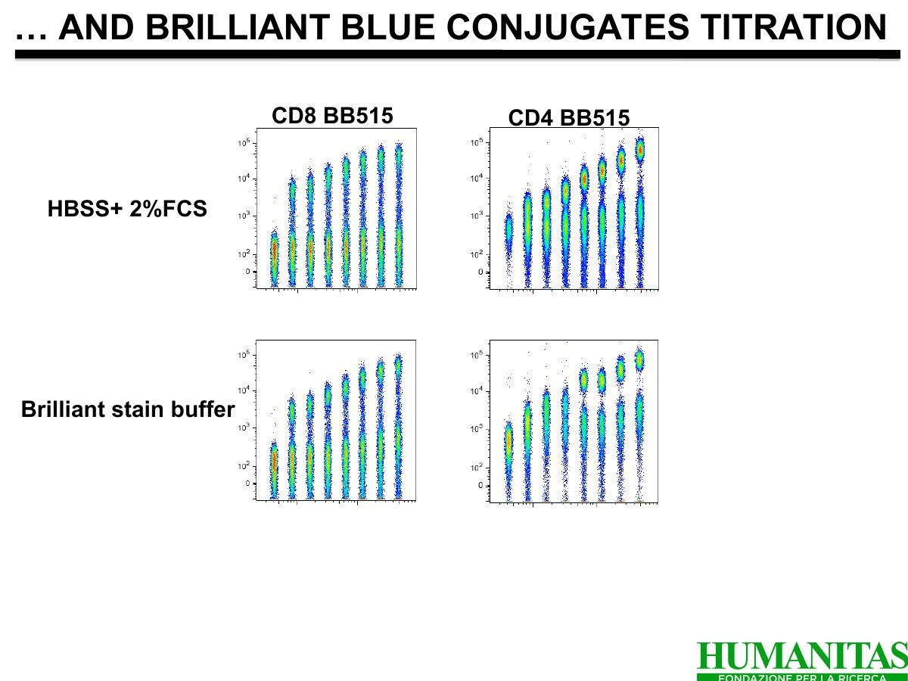
Extracted slide text
… AND BRILLIANT BLUE CONJUGATES TITRATION
CD8 BB515 CD4 BB515
HBSS+ 2%FCS
Brilliant stain buffer
Slide 44 — RESOLUTION MATRIX
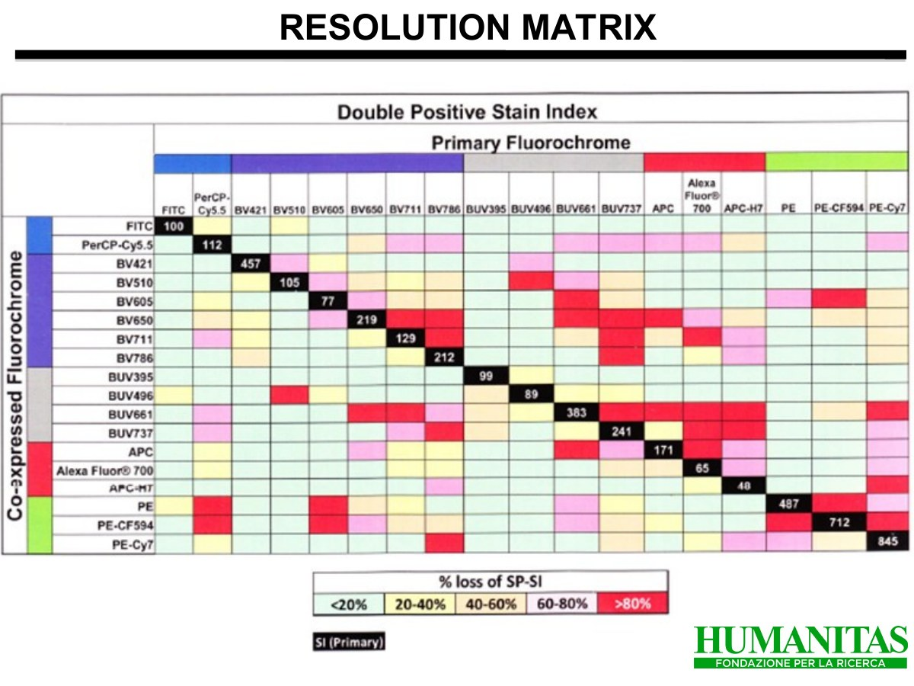
Extracted slide text
RESOLUTION MATRIX
Slide 45 — BUV395 BUV496 SPILLOVER
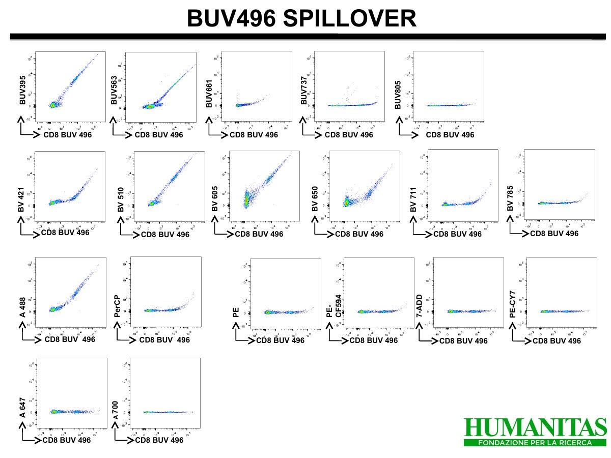
Extracted slide text
BUV395 BUV496 SPILLOVER
BUV563
BUV737
BUV661
BUV805
CD8 BUV 496 CD8 BUV 496 CD8 BUV 496 CD8 BUV 496 CD8 BUV 496
BV 785
BV 605
BV 650
BV 711
BV 421
BV 510
CD8 BUV 496 CD8 BUV 496 CD8 BUV 496 CD8 BUV 496 CD8 BUV 496 CD8 BUV 496
PE-CY7
7-ADD
CF594
PerCP
A 488
PE-
PE
CD8 BUV 496 CD8 BUV 496 CD8 BUV 496 CD8 BUV 496 CD8 BUV 496 CD8 BUV 496
A 647
A 700
CD8 BUV 496 CD8 BUV 496
Slide 46 — BRILLIANT DYES CONCLUSIONS
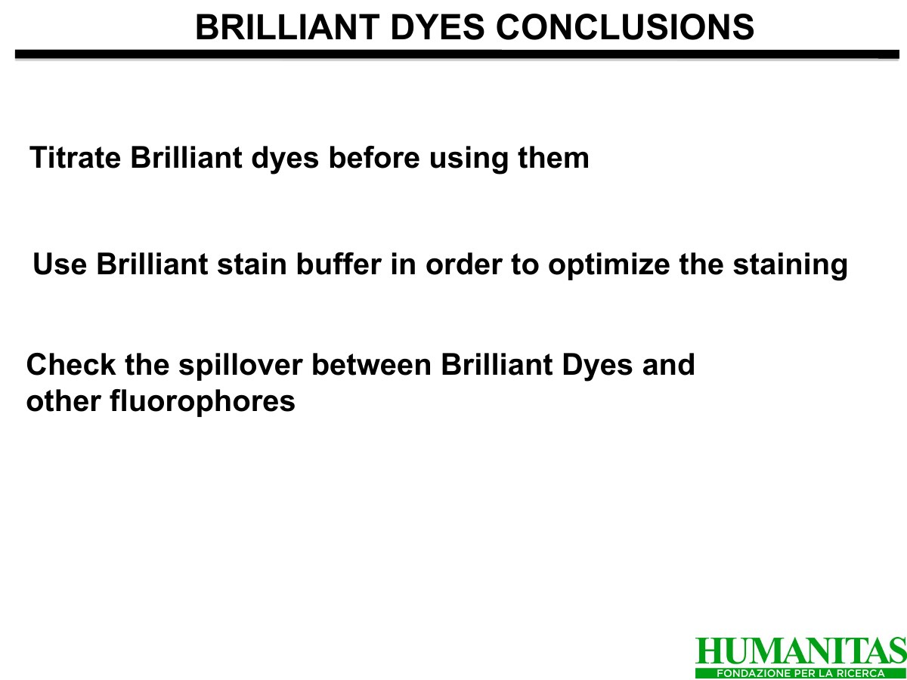
Extracted slide text
BRILLIANT DYES CONCLUSIONS Titrate Brilliant dyes before using them Use Brilliant stain buffer in order to optimize the staining Check the spillover between Brilliant Dyes and other fluorophores
Slide 47 — EVALUATION OF FLUOROPHORE BRILLIANCE
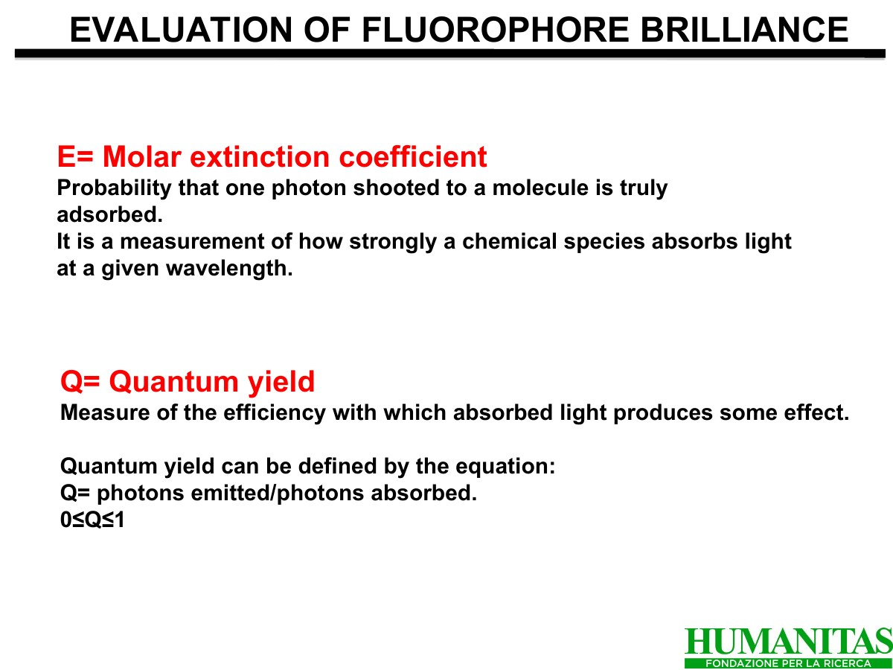
Extracted slide text
EVALUATION OF FLUOROPHORE BRILLIANCE E= Molar extinction coefficient Probability that one photon shooted to a molecule is truly adsorbed. It is a measurement of how strongly a chemical species absorbs light at a given wavelength. Q= Quantum yield Measure of the efficiency with which absorbed light produces some effect. Quantum yield can be defined by the equation: Q= photons emitted/photons absorbed. 0≤Q≤1
Slide 48 — EVALUATION OF FLUOROPHORE BRILLIANCE: F/P ratio
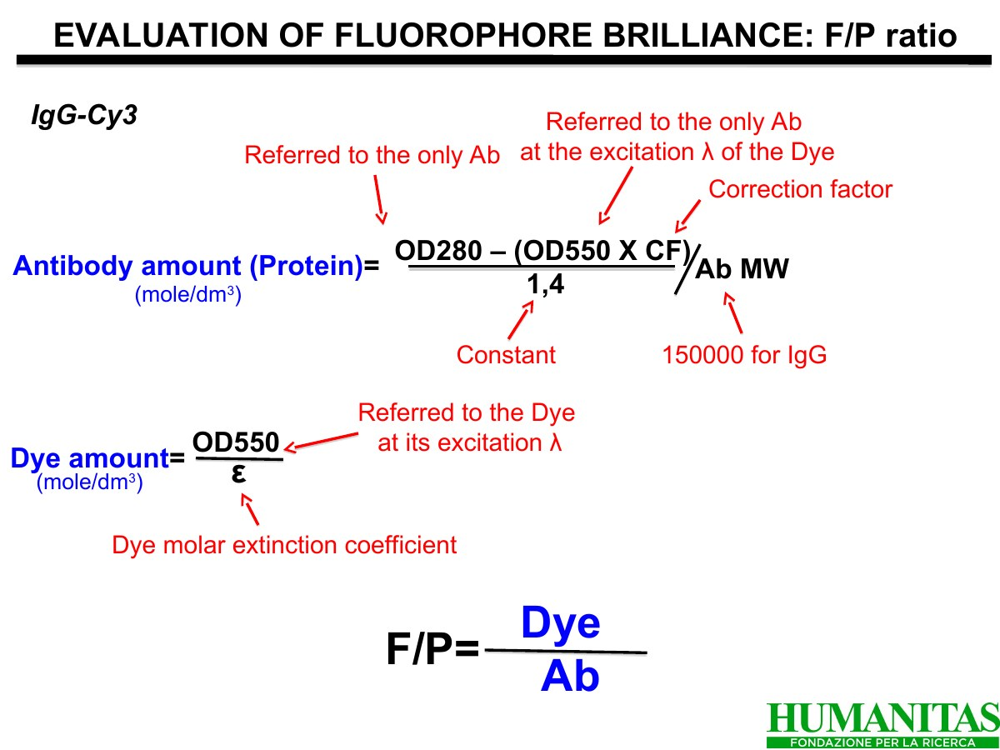
Extracted slide text
EVALUATION OF FLUOROPHORE BRILLIANCE: F/P ratio
IgG-Cy3 Referred to the only Ab
Referred to the only Ab at the excitation λ of the Dye
Correction factor
OD280 – (OD550 X CF)
Antibody amount (Protein)= Ab MW
(mole/dm3) 1,4
Constant 150000 for IgG
Referred to the Dye
OD550 at its excitation λ
Dye amount=
(mole/dm3) ε
Dye molar extinction coefficient
Dye
F/P=
Ab
Slide 49 — GENETICALLY ENCODED FLUORESCENT PROTEINS
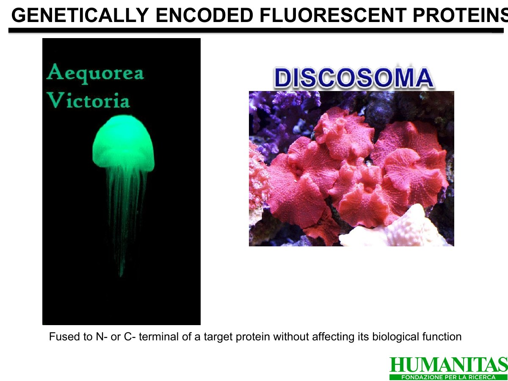
Extracted slide text
GENETICALLY ENCODED FLUORESCENT PROTEINS Fused to N- or C- terminal of a target protein without affecting its biological function
Slide 50 — PROPERTIES OF THE BEST FP VARIANTS
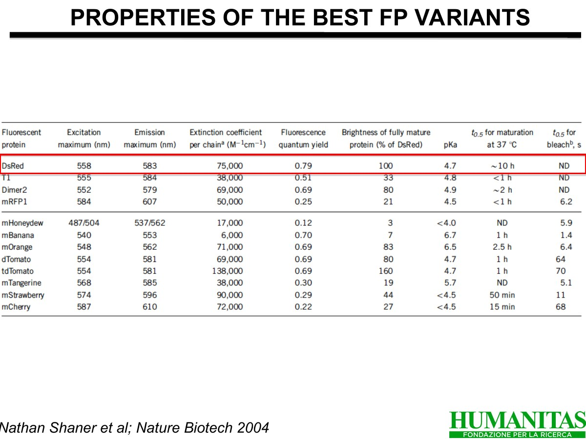
Extracted slide text
PROPERTIES OF THE BEST FP VARIANTS Nathan Shaner et al; Nature Biotech 2004
Slide 51 — MAIN FACTORS THAT INFLUENCE FLUORESCENCE
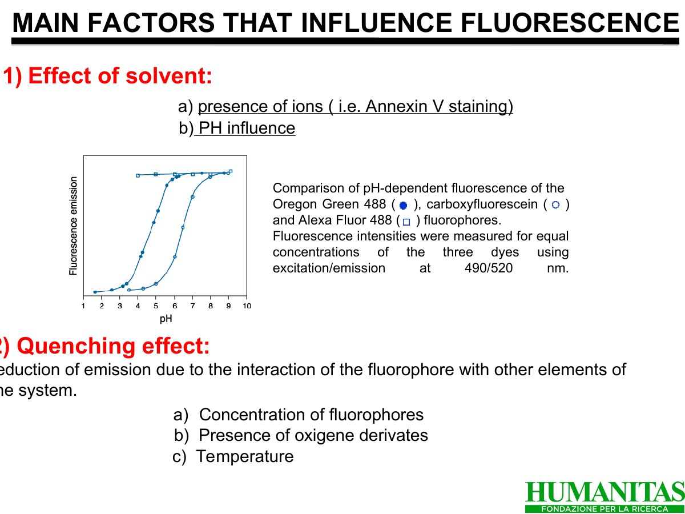
Extracted slide text
MAIN FACTORS THAT INFLUENCE FLUORESCENCE
1) Effect of solvent:
a) presence of ions ( i.e. Annexin V staining)
b) PH influence
Comparison of pH-dependent fluorescence of the
Oregon Green 488 ( ), carboxyfluorescein ( )
and Alexa Fluor 488 ( ) fluorophores.
Fluorescence intensities were measured for equal
concentrations of the three dyes using
excitation/emission at 490/520 nm.
2) Quenching effect:
eduction of emission due to the interaction of the fluorophore with other elements of
he system.
a) Concentration of fluorophores
b) Presence of oxigene derivates
c) Temperature
Slide 52 — MAIN FACTORS THAT INFLUENCE FLUORESCENCE
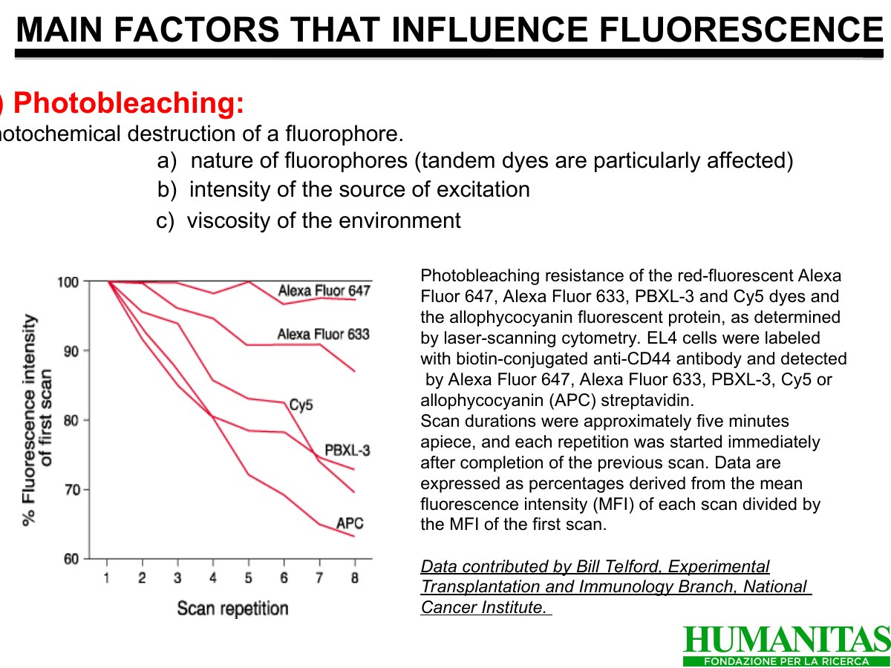
Extracted slide text
MAIN FACTORS THAT INFLUENCE FLUORESCENCE
) Photobleaching:
hotochemical destruction of a fluorophore.
a) nature of fluorophores (tandem dyes are particularly affected)
b) intensity of the source of excitation
c) viscosity of the environment
Photobleaching resistance of the red-fluorescent Alexa
Fluor 647, Alexa Fluor 633, PBXL-3 and Cy5 dyes and
the allophycocyanin fluorescent protein, as determined
by laser-scanning cytometry. EL4 cells were labeled
with biotin-conjugated anti-CD44 antibody and detected
by Alexa Fluor 647, Alexa Fluor 633, PBXL-3, Cy5 or
allophycocyanin (APC) streptavidin.
Scan durations were approximately five minutes
apiece, and each repetition was started immediately
after completion of the previous scan. Data are
expressed as percentages derived from the mean
fluorescence intensity (MFI) of each scan divided by
the MFI of the first scan.
Data contributed by Bill Telford, Experimental
Transplantation and Immunology Branch, National
Cancer Institute.
Slide 53 — THE BEST FLUOROPHORE:
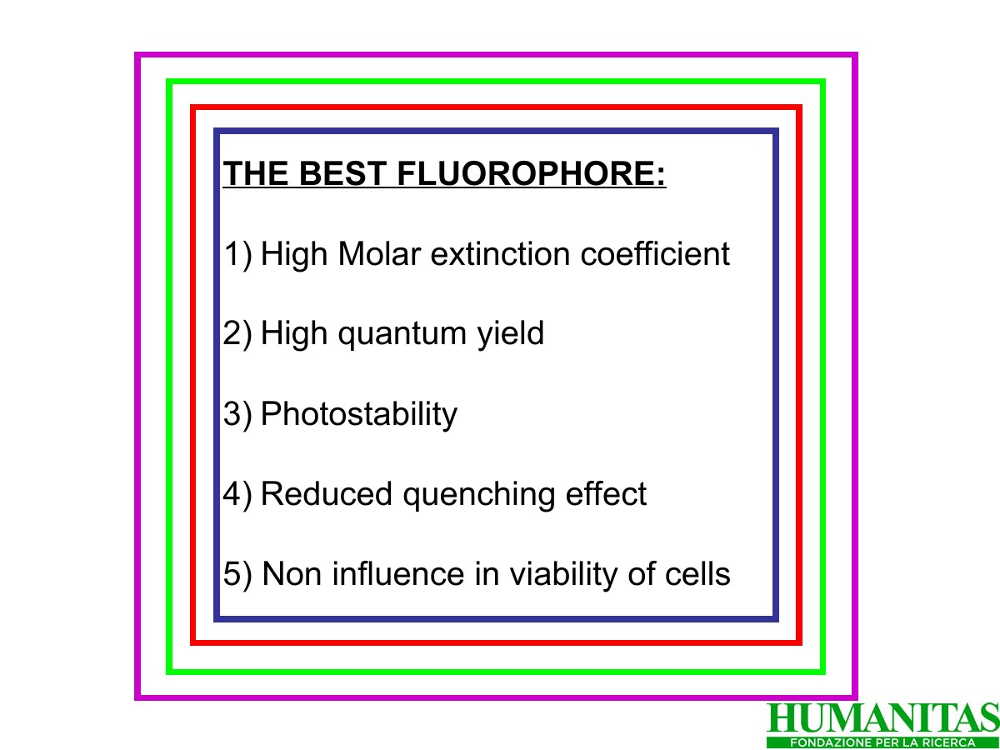
Extracted slide text
THE BEST FLUOROPHORE: 1) High Molar extinction coefficient 2) High quantum yield 3) Photostability 4) Reduced quenching effect 5) Non influence in viability of cells
Slide 54 — BIBLIOGRAPHY
Extracted slide text
BIBLIOGRAPHY Improved monomeric red, orange and yellow fluorescent proteins derived from Discosoma sp. red fluorescent protein Nathan C Shaner, Robert E Campbell, Paul A Steinbach, Ben N G Giepmans, Amy E Palmer & Roger Y Tsien
Slide 55 — USEFUL LINKS
Extracted slide text
USEFUL LINKS
https://www.thermofisher.com/it/en/home/life-science/cell-analysis/
labeling-chemistry/fluorescence-spectraviewer.html
http://www.biolegend.com/spectraanalyzer
https://www.bdbiosciences.com/sg/research/multicolor/spectrum_viewer/
index.jsp
Slide 56 — Untitled slide
Slide 57 — Untitled slide
Slide 58 — CELL STAINING PROCEDURES FOR IMMUNOPHENOTYPING
Extracted slide text
CELL STAINING PROCEDURES FOR IMMUNOPHENOTYPING DIRECT STAINING 1 STEP STAINING: Ab (monoclonal or polyclonal) directly conjugated with fluorophores
Slide 59 — CELL STAINING PROCEDURES FOR IMMUNOPHENOTYPING
Extracted slide text
CELL STAINING PROCEDURES FOR IMMUNOPHENOTYPING
STAINING APPROACHES
ANTIGEN
PRIMARY ANTIBODY
2 steps: primary purified antibody SECONDARY ANTIBODY
secondary antibody coniugated
DYE
ANTIGEN
3 steps: primary purified antibody PRIMARY ANTIBODY
secondary antibody biotinilated SECONDARY ANTIBODY
streptavidin coniugated BIOTINILATED
DYE
STREPTAVIDINE
Advantage and Limitations
Streptavidine-Biotin
Slide 60 — SIGNAL AMPLIFICATION
Extracted slide text
SIGNAL AMPLIFICATION
HOME MADE APPROACH
LASER PMT
FILTERS
Biotin
Dye
X Streptavidine
Y X>Y
Fluorophore
Cell surface
Antigen
Slide 61 — SIGNAL AMPLIFICATION
Extracted slide text
SIGNAL AMPLIFICATION
COMMERCIAL APPROACHES
ZENON technology:
INCREASE MOLAR RATIO FAB: FLUOROPHORE
NB: this is an useful method in case of mouse
anti mouse antibodies
Blood monocytes Spleen macrophages
Mouse IgG2a
Anti agrin IgG2a
Zenon alexa 647
Slide 62 — SIGNAL AMPLIFICATION
Extracted slide text
SIGNAL AMPLIFICATION
COMMERCIAL APPROACHES
Christmas tree approach
spleen post mix agr33bio#A8.fcs
R2 R3 R1
CD71 FITC
R7
R8
R9
R10
R4+R5
R1
100 101 102 10 3 104
TER-119 PE-A
Ter-119PE
100 101 102 103 104
APC-A
R2 R3
100 101 102 103 104 100 101 102 103 104
APC -A APC-A
R4+R5
Agrin33 biotinilated
Streptavidine APC
Three cycles of amplification
100 101 102 103 104
APC-A
Slide 63 — FALSE POSITIVE EVENTS
Extracted slide text
FALSE POSITIVE EVENTS
DOUBLETS DISCRIMINATION
H = height
VOLTAGE
A H A = area
W= width
TIME
Logical gate
R1 and R2 and R3
W
R3
R2
SSC-A
FSC-A
SSC-A
R1
FSC-A SSC-W FSC-W
Slide 64 — FALSE POSITIVE EVENTS
Extracted slide text
FALSE POSITIVE EVENTS
DEAD CELLS EXCLUSION
Dead cells can nonspecifically bind monoclonal antibody conjugates, potentially leading to false
positive events, particularly when cell frequencies are low.
DYE OPTIONS
1) DNA intercalating dyes (Propidium Iodide, 7AAD, SYTOX etc.)
2) Phosphatidylserine binding dyes (Annexin V)
3) Amino Reactive Viability Dyes (ViD, Zombie etc)
These dyes recognize late apoptotic events. They were found to be stable with no loss in
fluorescent intensity when treated with permeabilization or fixation reagents.
Since these dyes are excited by a variety of lasers and emit light energy at a variety of detectors,
they can be easily incorporated into different panel strategies.
Slide 65 — FALSE POSITIVE EVENTS
Extracted slide text
FALSE POSITIVE EVENTS
DOUBLETS DISCRIMINATION AND CELL DEAD EXCLUSION
Murine splenocytes
P1
SSC-A
P1
VID
P2
FSC-A FSC-A
P2
P4
SSC-A
P3
FSC-A
P3
FSC-W SSC-W
Slide 66 — NEGATIVE CONTROLS
Extracted slide text
NEGATIVE CONTROLS Staining of a negative cellular population Immunoglobulin isotype control: immunoglobulin with irrilevant specificity conjugated with the same fluorophore of the related antibody Blocking antibody control: staining with the unconjugated antibody followed by the staining with the conjugated ones Staining with isotype control followed by the staining with the secondary antibody directly conjugated (for 2 steps staining)
Slide 67 — NEGATIVE CONTROLS
Extracted slide text
NEGATIVE CONTROLS
Fluorescence Minus One (FMO) approach:
Mario Roederer
Current protocols in Cytometry 2002
Slide 68 — NEGATIVE CONTROLS
Extracted slide text
NEGATIVE CONTROLS
Fluorescence Minus One (FMO) approach:
Sample:
Hamster anti-human IgG 1 CD1a-APC
Mouse anti-human IgG1 HLA DR-FITC
Mouse anti-human IgG 2a CD80-BV510
Mouse anti-human IgG 2b CD86-PE
Negative control A: Negative control B:
Hamster IgG1-APC Hamster anti-human IgG 1 CD1a-APC
Mouse anti-human IgG1 HLA DR-FITC Mouse IgG1-FITC
Mouse anti-human IgG 2a CD80-BV510 Mouse anti-human IgG 2a CD80-BV510
Mouse anti-human IgG 2b CD86-PE Mouse anti-human IgG 2b CD86-PE
Negative control C: Negative control D:
Hamster anti-human IgG 1 CD1a-APC Hamster anti-human IgG 1 CD1a-APC
Mouse anti-human IgG1 HLA DR-FITC Mouse anti-human IgG1 HLA DR-FITC
Mouse IgG 2 a-BV510 Mouse anti-human IgG 2a CD80-BV510
Mouse anti-human IgG 2b CD86-PE Mouse IgG 2b-PE
Slide 69 — BIBLIOGRAPHY
Extracted slide text
BIBLIOGRAPHY
UNIT 1.14 Compensation in Flow Cytometry
Mario Roederer
Published Online: 1 DEC 2002
Slide 70 — BEFORE STARTING…….
Extracted slide text
BEFORE STARTING……. Check on spectra viewer the excitation and emission wavelenghts of your fluorophores Verify the equipment of your instrument in term of lasers and optical bench Choose the brighter fluorophore for the antibody who recognizes the less expressed antigen Exclude dead cells and doublets from the analysis in order to minimize false positive events Use the right negative control (FMO plus isotype control)